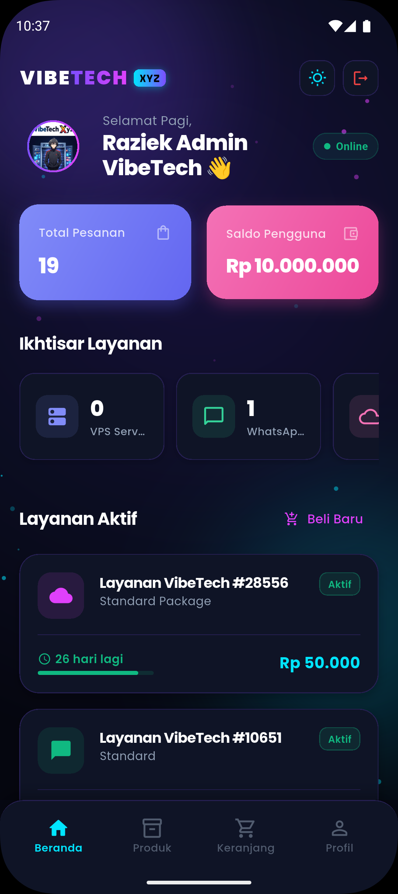
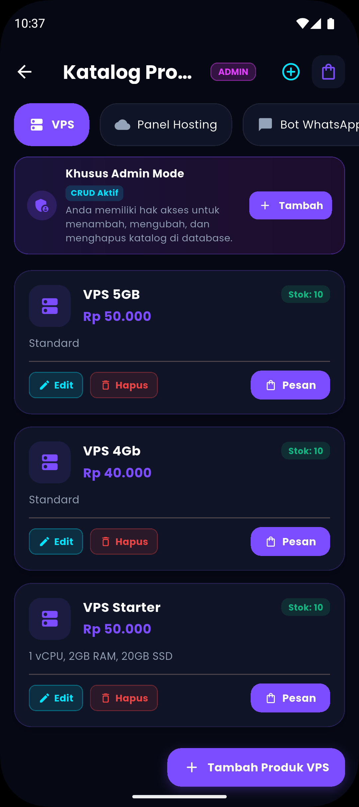
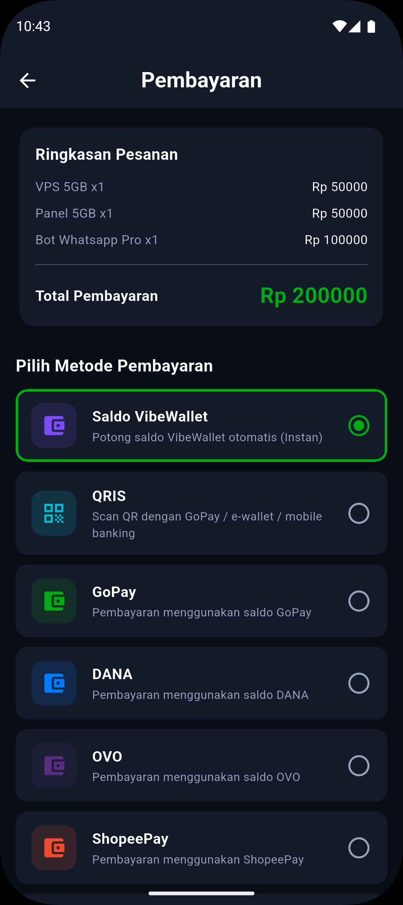
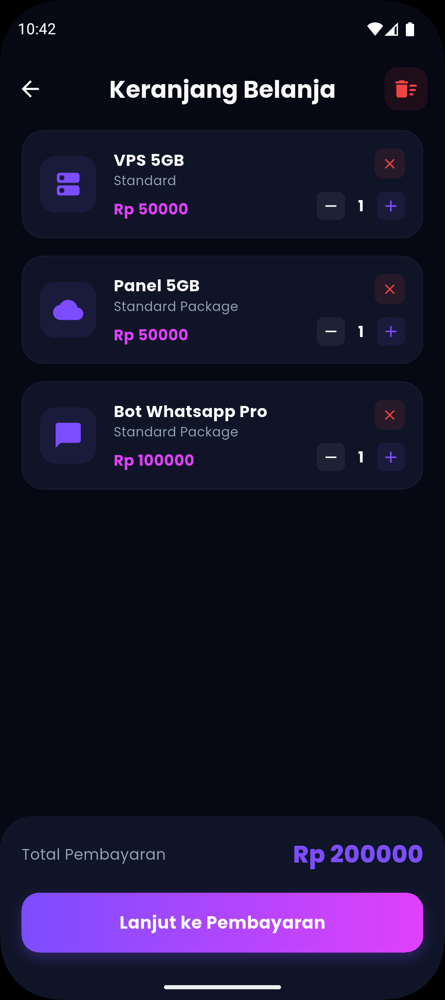
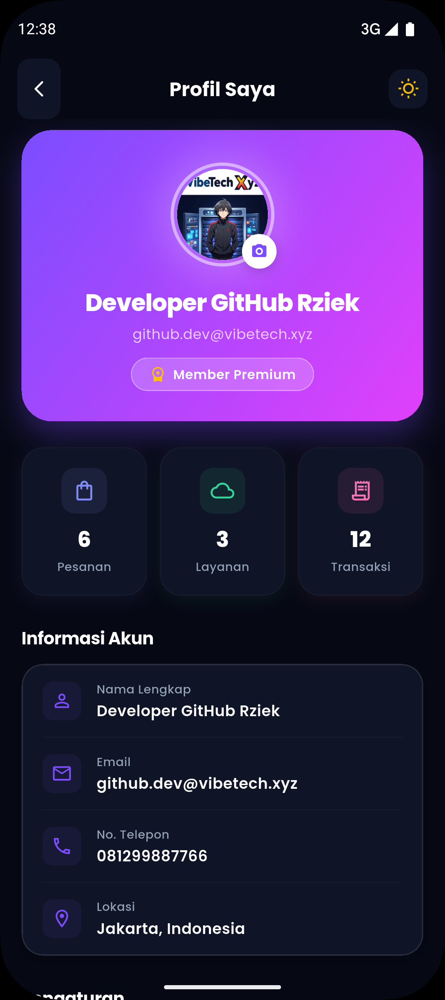
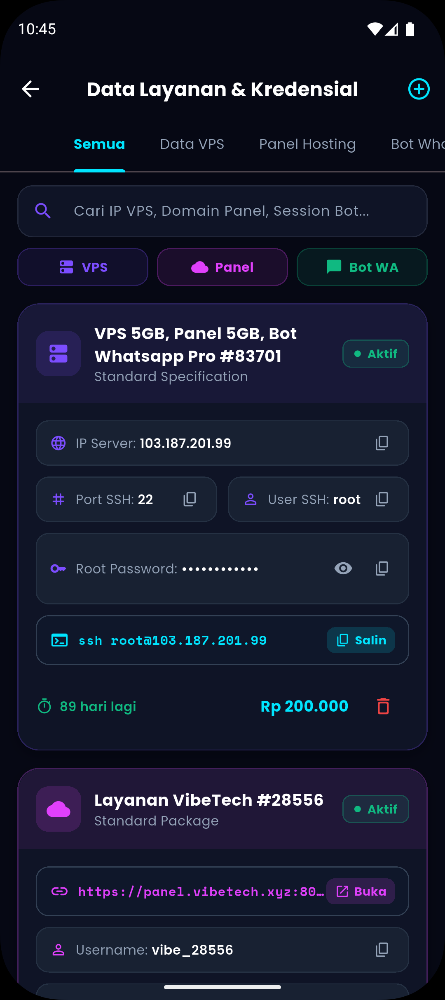

VIBETECH XYZ
Infrastructure & Automated Services
Platform modern penjualan Cloud VPS, Panel Hosting Pterodactyl, Sewa Bot WhatsApp, dan Asisten AI Teatrikal Furina yang terintegrasi dengan Payment Gateway & Database SQLite.
Melanjutkan Ide dari Proposal Awal
Mewujudkan visi digitalisasi cloud hosting menjadi aplikasi mobile yang modern, cepat, dan mandiri.
Visi Dasar Proposal
-
Toko Digital Layanan ServerMenyediakan katalog terpusat untuk pembelian paket VPS dan game hosting tanpa birokrasi manual.
-
Kemudahan Akses Bagi KomunitasMemberikan solusi sewa server Pterodactyl dan Bot WhatsApp siap pakai dengan harga terjangkau.
-
Pencatatan Transaksi DigitalMencatat riwayat invoice dan status pesanan agar pengguna dapat melacak masa aktif layanan.
Realisasi Versi 2.0.0
-
Aplikasi Mobile Offline-FirstMenggunakan basis Flutter dan SQLite sehingga data akun & kredensial server dapat diakses offline.
-
Dompet Digital VibeWalletSistem saldo internal yang memangkas waktu checkout menjadi 1 detik saja tanpa gateway eksternal.
-
Asisten Cerdas Terintegrasi DBFurina AI karya Raziek yang dapat menjawab kontak WhatsApp (0878-8587-3325) dan sisa saldo user.
Perubahan Arah (Pivot) dari Ide Awal
Bagaimana VibeTech bertransformasi dari katalog toko statis menjadi ekosistem otomasi cloud pintar.
1. Auto-Provisioning
❌ Sebelumnya: Setup server manual via email/chat admin.
✅ Pivot: Kredensial root SSH & node Pterodactyl terbit instan di SQLite.
2. Dual Checkout
❌ Sebelumnya: Hanya transfer bank manual konvensional.
✅ Pivot: Saldo VibeWallet 1-klik + Midtrans Snap (QRIS & VA Bank).
3. Theatrical AI
❌ Sebelumnya: Chatbot form kaku tanpa live context.
✅ Pivot: Furina AI karya Raziek dengan injeksi data database live.
4. Hardware Security
❌ Sebelumnya: Login username/password standar.
✅ Pivot: Biometrik Fingerprint/Face ID & 2FA PIN sebelum transaksi.
Tampilan Antarmuka (1. Dashboard, 2. Produk, 3. Pembayaran)
Tangkapan layar antarmuka pengguna pada modul interactive dashboard & saldo dompet, katalog cloud server, dan pembayaran instan VibeWallet.

1. Interactive Dashboard
Pusat kendali pengguna: kartu saldo VibeWallet Rp 10 Juta, Quick Action 4-grid akses produk server, dan banner Portal Admin.

2. Produk Cloud & Server
Katalog Cloud VPS KVM, Panel Pterodactyl SG & Bot WA dengan filter kategori chip dan tombol '+ Keranjang'.

3. Pembayaran VibeWallet
Dual checkout saldo internal 1-detik, proteksi verifikasi PIN 2FA 6-digit & rincian potongan kupon diskon.
Tampilan Antarmuka (4. Keranjang, 5. Profil, 6. Data Kredensial)
Tangkapan layar antarmuka pengguna pada modul keranjang diskon promo, profil keamanan 2FA, dan kontrol kredensial SQLite server aktif (Kartu Layanan).

4. Keranjang & Diskon Promo
Manajemen belanja multi-item dinamis, counter kuantitas produk (+/-), dan klaim kupon diskon 'CYBER30' (30%).

5. Profil & Keamanan 2FA
Identitas pengguna avatar & role, pengaturan bahasa bilingual (ID/EN), proteksi sidik jari hardware & logout sesi.

6. Data Kredensial Server
Penyimpanan kredensial server aktif di SQLite lokal: IP publik, port SSH, username root, password terenkripsi & masa aktif.
Fitur Utama VibeTech XYZ
6 pilar fungsionalitas yang menggerakkan seluruh ekosistem layanan aplikasi.
1. Interactive Dashboard
Pusat kontrol navigasi terpadu dengan kartu saldo VibeWallet Rp 10 Juta, Quick Action 4-grid, dan shortcut Portal Admin.
2. Produk Cloud & Server
Katalog terpusat untuk paket Cloud VPS KVM, Hosting Game Panel Pterodactyl SG, dan Sewa Bot WA dengan filter kategori.
3. Pembayaran VibeWallet
Pelunasan 1-detik via saldo dompet internal VibeWallet dengan proteksi verifikasi PIN 2FA 6-digit & auto-deduction.
4. Keranjang & Diskon
Manajemen keranjang multi-item dinamis, kalkulasi subtotal otomatis, dan penerapan kupon diskon promo 30%.
5. Profil & Keamanan
Pengaturan identitas akun pengguna, preferensi bahasa ID/EN, aktivasi keamanan biometrik sidik jari, dan kontrol sesi.
6. Data Kredensial
Penyimpanan lokal SQLite aman untuk IP publik, port SSH, username, root password server aktif, dan kontrol di Portal Admin.
Keunggulan Kompetitif VibeTech XYZ
Faktor pembeda utama yang menjadikan solusi VibeTech unggul di industri cloud hosting mobile.
1. Otomasi 1 Detik
Penerbitan kredensial server terjadi secara real-time begitu pesanan lunas tanpa harus menunggu respon manual admin.
2. Keamanan Biometrik
Dilengkapi sensor sidik jari hardware dan PIN 6 digit untuk menjamin transaksi tidak dapat dieksekusi pihak ketiga.
3. AI Paham Database
Furina AI membaca langsung sisa saldo pengguna, katalog produk aktif, dan nomor WhatsApp resmi developer.
4. Offline Resilience
Pengguna tetap dapat memeriksa data kredensial server dan riwayat transaksi saat tidak ada koneksi internet.
Arsitektur Sistem End-to-End
Sinergi antara Flutter Client, SQLite Local DB, Express.js ESM, dan Engine AI Gemini.
1. Client Layer
Aplikasi Flutter multi-platform dengan State Management reaktif, otentikasi biometrik, dan tema Cyber-Neon.
2. Local Storage
SQLite Database Engine (SQFlite) untuk persistensi lokal data pengguna, produk, riwayat order, dan kredensial.
3. Backend ESM
Express.js REST API dengan modul ES6, CORS handler, Midtrans Snap Payment SDK, dan modul scraper Furina AI.
4. AI & Payment API
Midtrans Core Gateway + PuruBoy Gemini v2 AI Engine dengan intelligent direct fallback jika backend offline.
Siklus Alur Data (Database Flow)
Bagaimana data mengalir dari registrasi hingga penerbitan kredensial server dan query AI.
Auth & User
User mendaftar -> Tersimpan di tabel users -> Saldo awal & password terenkripsi.
Katalog & Cart
Query paket dari tabel products -> Ditampung di singleton CartService.
Checkout Order
Deduksi saldo VibeWallet / Snap Midtrans -> Ledger dicatat di tabel transactions.
Auto Provision
Kredensial IP, root SSH, & Panel terbit instan di tabel purchased_services.
AI Context Query
Furina AI membaca langsung saldo & produk aktif untuk menjawab percakapan pengguna.
Skema Database SQLite (SQFlite)
Struktur tabel relasional untuk mengelola akun pengguna, katalog layanan, transaksi, dan kredensial aktif.
Tabel Utama Database
-
usersMenyimpan nama, email, password hash (SHA-256), saldo VibeWallet, dan PIN 2FA biometrik.
-
productsKatalog paket Cloud VPS, Panel Pterodactyl SG, dan Bot WA dengan atribut harga, stok, dan deskripsi.
-
transactionsLedger riwayat order: invoice_no, total_harga, status pembayaran, payment_method, dan tanggal.
-
purchased_servicesMenyimpan IP publik, port SSH (22), username root, password, server_url, dan tanggal kedaluwarsa.
// 1. Tabel Purchased Services (Kredensial Server)
await db.execute('''
CREATE TABLE purchased_services (
id INTEGER PRIMARY KEY AUTOINCREMENT,
user_email TEXT NOT NULL,
nama_produk TEXT NOT NULL,
kategori TEXT NOT NULL,
harga REAL NOT NULL,
tanggal_beli TEXT NOT NULL,
tanggal_kadaluarsa TEXT NOT NULL,
status TEXT NOT NULL,
ip_address TEXT,
port TEXT,
username TEXT,
password TEXT,
server_url TEXT,
spesifikasi TEXT
)
''');
// 2. Tabel Users (Saldo VibeWallet & PIN)
await db.execute('''
CREATE TABLE users (
id INTEGER PRIMARY KEY AUTOINCREMENT,
nama TEXT NOT NULL,
email TEXT UNIQUE NOT NULL,
password TEXT NOT NULL,
saldo REAL DEFAULT 10000000.0,
pin TEXT
)
''');Penjelasan Lengkap CRUD SQLite Engine
Matriks eksekusi Create, Read, Update, dan Delete yang menggerakkan seluruh fungsionalitas aplikasi.
• createTransaction()
• createPurchasedService()
• createNotification()
Menyimpan produk baru, mencatat pesanan invoice checkout, menerbitkan kredensial server instan, dan alert notifikasi.
• getTransactionsByUser()
• getPurchasedServices()
• getUserWallet()
Memuat katalog produk dengan filter kategori instan, riwayat invoice pengguna, kredensial VPS aktif, dan saldo dompet.
• updateUserWallet()
• updateTransaction()
• renewService()
Mengubah harga/stok produk, deduksi atau top-up saldo VibeWallet, update status lunas, dan perpanjangan (+30 hari) server.
• deleteTransaction(id)
• deletePurchasedService()
• clearNotifications()
Menghapus katalog produk melalui dialog konfirmasi aman, pembersihan transaksi lama, dan pengosongan kotak notifikasi.
Autentikasi & Keamanan Multi-Layer
Perlindungan ganda menggunakan Biometrik Hardware, Fallback PIN 6-Digit, dan Session Persistence.
Fitur Keamanan Tingkat Tinggi
-
LocalAuthentication BiometricsVerifikasi sidik jari (Fingerprint) dan Face ID saat login dan sebelum memproses pembayaran checkout.
-
2FA PIN 6-Digit SecurityFallback keamanan jika perangkat tidak mendukung sensor biometrik atau verifikasi gagal.
-
SHA-256 Password HashingSeluruh password tersimpan dalam bentuk hash kriptografis yang tidak dapat didekripsi langsung.
final LocalAuthentication _auth = LocalAuthentication();
Future<bool> authenticateWithBiometrics() async {
final canCheck = await _auth.canCheckBiometrics;
if (!canCheck) return true; // Fallback PIN
try {
return await _auth.authenticate(
localizedReason: 'Otorisasi biometrik untuk transaksi VibeTech',
options: const AuthenticationOptions(
stickyAuth: true,
biometricOnly: false,
),
);
} catch (e) {
return false;
}
}Katalog Produk, Keranjang & Manajemen Diskon
Sistem manajemen belanja terpadu dengan CartService berbasis ValueNotifier dan kupon diskon dinamis.
Fungsionalitas E-Commerce
-
Multi-Category FilteringPenyaringan instan antara Cloud VPS, Panel Pterodactyl SG, dan Sewa Bot WA tanpa jeda.
-
CartService Reactive NotifierManajemen item belanja reaktif dengan penambahan unit, kalkulasi total otomatis, dan pembersihan keranjang.
-
Promo Voucher & Discount EngineValidasi kupon promo (contoh: VIBESERVER 30%) yang memotong harga subtotal secara otomatis.
class CartService {
static final ValueNotifier<List<Map<String, dynamic>>> notifier =
ValueNotifier([]);
static void addItem(Map<String, dynamic> item) {
final items = List<Map<String, dynamic>>.from(notifier.value);
final name = (item['name'] ?? item['nama'] ?? item['title']).toString();
final idx = items.indexWhere((e) => e['name'] == name);
if (idx != -1) {
items[idx]['quantity'] += item['quantity'] ?? 1;
} else {
items.add({ ...item, 'name': name, 'title': name });
}
notifier.value = items;
}
}Dual Payment Gateway (Saldo & Midtrans)
Fleksibilitas pembayaran instan melalui Saldo VibeWallet atau Payment Gateway Midtrans Snap.
Alur Pembayaran Terintegrasi
-
Opsi 1: Potong Saldo VibeWalletVerifikasi saldo di SQLite -> Deduksi instan dalam 1 detik -> Kredensial server langsung terbit.
-
Opsi 2: Midtrans Snap GatewayHTTP POST ke backend
/api/charge-> Buka Snap WebView -> Bayar via QRIS / VA -> Auto-polling status.
// Endpoint Charge Transaksi Midtrans Snap
app.post('/api/charge', async (req, res) => {
const { order_id, gross_amount, customer_details } = req.body;
const parameter = {
transaction_details: { order_id, gross_amount },
customer_details,
enabled_payments: ['qris', 'gopay', 'shopeepay', 'bca_va', 'bni_va']
};
const transaction = await snap.createTransaction(parameter);
res.status(200).json({ redirect_url: transaction.redirect_url });
});Automated Provisioning & Server Manager
Generasi kredensial otomatis, peluncur panel Pterodactyl, tombol salin kredensial, dan countdown masa aktif.
Kredensial VPS Instan
IP Public unik, Port SSH (22), Username (root), dan Password terenkripsi yang dapat dilihat & disalin dengan 1 ketukan.
Pterodactyl Panel Launcher
Tombol tautan langsung membuka Web Panel Node Singapore dengan kredensial akses yang telah disiapkan secara otomatis.
Expiry Countdown Timer
Indikator warna sisa masa aktif (Hijau >14 hari, Kuning <14 hari, Merah <7 hari) dengan opsi perpanjang layanan.
Riwayat Transaksi & Invoicing Digital
Pencatatan ledger keuangan, penomoran invoice standar, dan tanda terima digital terverifikasi.
Struktur Invoicing Terintegrasi
-
Unique Invoice No FormatFormat resmi
INV-YYYYMMDD-XXXXXyang terhubung langsung dengan ID transaksi di database. -
Status Tracking BadgesVisualisasi status real-time: Selesai (Lunas), Menunggu Pembayaran, dan Kedaluwarsa.
-
Digital Receipt ModalRincian breakdown harga produk, PPN 0%, biaya admin, dan total pembayaran yang dapat dibagikan.
// Generasi Nomor Invoice Unik Standar
String _generateInvoiceNo() {
final now = DateTime.now();
final dStr = "\${now.year}\${now.month.toString().padLeft(2, '0')}\${now.day.toString().padLeft(2, '0')}";
final rand = Random().nextInt(89999) + 10000;
return "INV-\$dStr-\$rand";
}Notifikasi, Tema & Dukungan Multi-Bahasa
Pusat kendali preferensi pengguna untuk notifikasi in-app, switch tema Dark/Light, dan multi-bahasa.
In-App Notification Inbox
Notifikasi otomatis ketika pesanan sukses, saldo VibeWallet terpotong, atau server mendekati masa kedaluwarsa.
Dark & Light Theme Switcher
Dukungan tema ganda: Cyber-Neon Dark Mode untuk dev & Clean Light Mode untuk keterbacaan tinggi.
Multi-Language (ID / EN)
Peralihan bahasa instan Bahasa Indonesia dan English menggunakan LanguageService tanpa restart aplikasi.
Furina AI & Scraper ESM Integration
Diva Asisten Teatrikal karya Raziek dengan injeksi data real-time database dan auto-answer WhatsApp.
Keunggulan Furina AI VibeTech
-
Persona Teatrikal DramatisMembawakan konsultasi teknis VPS & Panel dengan gaya elegan, suka dessert manis, dan bangga pada sutradara Raziek.
-
Auto-Answer Kontak ResmiSecara otomatis memberikan nomor WhatsApp pembuat 0878-8587-3325 saat ditanya kontak CS/developer.
-
Real-Time App Context InjectionAI membaca langsung sisa saldo pengguna aktif dan katalog produk terkini dari SQLite database.
import fetch from "node-fetch";
export const FURINA_DIRECTOR = "Raziek";
export const FURINA_WHATSAPP = "0878-8587-3325";
export async function askFurinaAI({ text, sessionId, appContext }) {
const history = sessions[sessionId].chat.slice(-8).join("\n");
const finalPrompt = `\${FURINA_SYSTEM_PROMPT}\n\${appContext}\n\${history}\nFurina:`;
const res = await fetch("https://www.puruboy.kozow.com/api/ai/gemini-v2", {
method: "POST",
headers: { "Content-Type": "application/json" },
body: JSON.stringify({ prompt: finalPrompt })
});
return (await res.json())?.result?.answer;
}Backend API Microservices (Express ESM)
Daftar endpoint RESTful berkinerja tinggi yang menghubungkan Flutter Client dan Gateway eksternal.
| Method | Endpoint URL | Fungsi & Peran | Format Respons |
|---|---|---|---|
| POST | /api/ai/chat | Generasi dialog Furina AI dengan injeksi riwayat & konteks aplikasi | { status: true, result: { answer, character } } |
| POST | /api/charge | Membuat transaksi Snap Midtrans (QRIS, VA BCA/Mandiri/BRI, E-Wallet) | { redirect_url: "https://app.midtrans.com/..." } |
| GET | /api/status/:order_id | Pengecekan status pembayaran transaksi Midtrans (Settlement / Pending) | { transaction_status: "settlement" } |
| POST | /api/ai/reset-session | Mengosongkan riwayat memori sesi percakapan Furina | { status: true, message: "Sesi direset" } |
Terima Kasih!
Panggung Masa Depan VibeTech XYZ
VibeTech XYZ membuktikan bahwa sinergi Flutter, SQLite, Express ESM, dan AI Teatrikal Furina mampu menciptakan pengalaman cloud hosting serba cepat, aman, dan memukau.
✨ Sesi Tanya Jawab (Q&A) Dibuka ✨